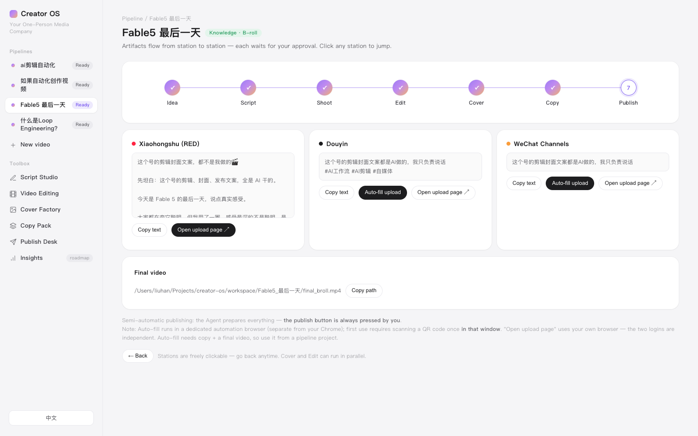

Creator OS
Your One-Person Media Company
Liu Han · BUIDL_OPC_Hackathon_SG · July 12, 2026
Built live today, powered by Claude
The problem we're solving
A solo creator's video is 20% creating,
80% grunt work
Topic 💡
→
Script
→
Shoot 🎥
→
Edit + captions
→
Thumbnail
→
Copy ×3 platforms
→
Upload ×3
Only the purple parts are creating. Everything else is hours of repetitive work — per video, alone.
- Post daily and you've opened an unpaid sweatshop with yourself inside
- I know because it's my account. I'm a non-technical solo creator — this was my week, every week.
Why we built it this way
Automate the 80%. Keep the judgment human.
01
Agents per station,
not one magic button
One-click AI video sounds great and ships garbage. Each production step gets its own Agent — script, edit, cover, copy, publish — small enough to be excellent.
02
A human gate
at every station
Every Agent's output waits for approval: edit the script, veto a B-roll clip, rewrite a caption. The publish button is always pressed by a human.
03
Prompts are user-space,
not code
Every Agent's brain is an editable prompt file. The template is public — tuned to your voice and your audience, it becomes uniquely yours.
That's the hackathon theme, literally: human judgment guides AI execution.
What we built — today
Seven stations, one web app, bilingual

- Idea → Script → Shoot → Edit → Cover → Copy → Publish — chained, or each tool standalone
- Two lanes: talking-head (production-proven) & knowledge videos with B-roll
- Publish Desk auto-fills the upload page — video, title, tags — then stops and waits for you
- Live demo next →
What it achieves
Hours per video → about ten minutes.
Measured on my real account.
56 sec
video preprocessing — normalize, transcribe, AI sentence-split, unattended
~10 min
total hands-on time per video (was hours)
17
cover templates in production · cover-factory-web.vercel.app
- The editing & cover lanes already run my real published videos — this isn't a prototype pipeline
- Built today on top of it: the unified web app, B-roll sourcing & compositing, semi-auto publishing, bilingual UI
Our goal
Every creator gets their own
one-person media company
NextTemplate for anyone
Clone it, plug in your fonts, your face, your voice. Subscription agency-in-a-box for knowledge & talking-head creators — the beachhead.
The moatAn AI that learns your account
Blind-predict performance before publish → reconcile with real data at T+3 → feed the gap back into the rubric. Already running in CLI; joining the OS next. Your calibration data — yours alone.
ThenEvery format
Tutorials, vlogs, podcast clips — a new format is a new set of prompts, not new engineering.
Team: one person, non-technical, plus a crew of Agents.
Designed, built, debugged and pitched in one day — I'm not pitching a vision, I am the One Person Company.
Humans judge.
Agents execute.
Creator OS · Your One-Person Media Company
github.com/Shellylh123/creator-os